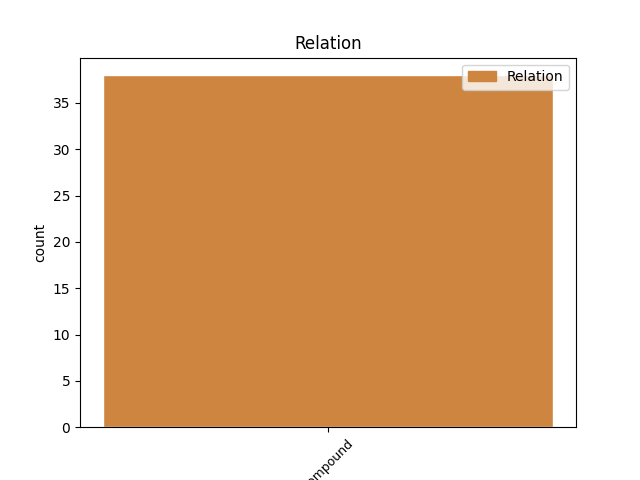
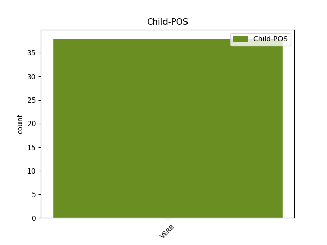

Distribution of features within this leaf



Agreement Rules sorted by frequency.
- When the dependent token is the modifer(mod) of the head token, and the head token is VERB
1 Hastaneye _ _ _ _ 0 _ _ _
2 yatırmışlar _ _ _ _ 0 _ _ _
3 kaç _ _ _ _ 0 _ _ _
4 defa _ _ _ _ 0 _ _ _
5 , _ _ _ _ 0 _ _ _
6 biraz _ _ _ _ 0 _ _ _
7 düzelir _ _ _ _ 0 _ _ _
8 gibi _ _ _ _ 0 _ _ _
9 oluyor _ _ _ _ 0 _ _ _
10 , _ _ _ _ 0 _ _ _
11 ay _ _ _ _ 0 _ _ _
12 geçmeden _ _ _ _ 0 _ _ _
13 başlıyor başla VERB Verb Aspect=Prog|Mood=Ind|Number=Sing|Person=3|Polarity=Pos|Polite=Infm|Tense=Pres 0 _ _ _
14 daha _ _ _ _ 0 _ _ _
15 beter _ _ _ _ 0 _ _ _
16 içmeye iç VERB Verb Aspect=Perf|Case=Dat|Mood=Ind|Polarity=Pos|Tense=Pres|VerbForm=Vnoun 13 mod _ SpaceAfter=No
17 . _ _ _ _ 0 _ _ _
1 Rolü _ _ _ _ 0 _ _ _
2 başkasına _ _ _ _ 0 _ _ _
3 verdik ver VERB Verb Aspect=Perf|Mood=Ind|Number=Plur|Person=1|Polarity=Pos|Tense=Past 4 comp:obj _ _
4 dediler de VERB Verb Aspect=Perf|Mood=Ind|Number=Plur|Person=3|Polarity=Pos|Tense=Past 0 _ _ _
5 . _ _ _ _ 0 _ _ _
1 oniki _ _ _ _ 0 _ _ _
2 Aralık'a _ _ _ _ 0 _ _ _
3 kadar _ _ _ _ 0 _ _ _
4 çıkarılması çıkar VERB Verb Aspect=Perf|Case=Nom|Mood=Ind|Number[psor]=Sing|Person[psor]=3|Polarity=Pos|Tense=Pres|VerbForm=Vnoun|Voice=Pass 5 subj _ _
5 beklenen bekle VERB Verb Aspect=Perf|Mood=Ind|Polarity=Pos|Tense=Pres|VerbForm=Part|Voice=Pass 0 _ _ _
6 AB _ _ _ _ 0 _ _ _
7 uyum _ _ _ _ 0 _ _ _
8 yasalarını _ _ _ _ 0 _ _ _
9 içeren _ _ _ _ 0 _ _ _
10 paketin _ _ _ _ 0 _ _ _
11 çalışmaları _ _ _ _ 0 _ _ _
12 dün _ _ _ _ 0 _ _ _
13 gece _ _ _ _ 0 _ _ _
14 tamamlandı _ _ _ _ 0 _ _ _
15 . _ _ _ _ 0 _ _ _
1 Üç _ _ _ _ 0 _ _ _
2 ocak _ _ _ _ 0 _ _ _
3 lı _ _ _ _ 0 _ _ _
4 demirci _ _ _ _ 0 _ _ _
5 dükkanı _ _ _ _ 0 _ _ _
6 deyip dey VERB Verb Aspect=Perf|Mood=Ind|Polarity=Pos|Tense=Pres|VerbForm=Conv 0 _ _ _
7 geçme geç VERB Verb Aspect=Perf|Mood=Imp|Number=Sing|Person=2|Polarity=Neg|Tense=Pres 6 compound _ SpaceAfter=No
8 , _ _ _ _ 0 _ _ _
9 fayton _ _ _ _ 0 _ _ _
10 imalatından _ _ _ _ 0 _ _ _
11 zengin _ _ _ _ 0 _ _ _
12 bile _ _ _ _ 0 _ _ _
13 olmuşlar _ _ _ _ 0 _ _ _
14 . _ _ _ _ 0 _ _ _
1 Gerilip ger VERB Verb Aspect=Perf|Mood=Ind|Polarity=Pos|Tense=Pres|VerbForm=Conv|Voice=Pass 0 _ _ _
2 gerilip ger VERB Verb Aspect=Perf|Mood=Ind|Polarity=Pos|Tense=Pres|VerbForm=Conv|Voice=Pass 1 compound@redup _ _
3 atladılar _ _ _ _ 0 _ _ _
4 . _ _ _ _ 0 _ _ _
1 - _ _ _ _ 0 _ _ _
2 Bir _ _ _ _ 0 _ _ _
3 yerden _ _ _ _ 0 _ _ _
4 mi mi AUX Ques Aspect=Perf|Mood=Ind|Number=Sing|Person=3|Tense=Pres 6 udep _ _
5 bakıp _ _ _ _ 0 _ _ _
6 yazıyorsun yaz VERB Verb Aspect=Prog|Mood=Ind|Number=Sing|Person=2|Polarity=Pos|Polite=Infm|Tense=Pres 0 _ _ _
7 . _ _ _ _ 0 _ _ _
1 Bu _ _ _ _ 0 _ _ _
2 önermelerin öner VERB Verb Aspect=Perf|Case=Gen|Mood=Ind|Polarity=Pos|Tense=Pres|VerbForm=Vnoun 5 mod@poss _ _
3 usa _ _ _ _ 0 _ _ _
4 yatkın _ _ _ _ 0 _ _ _
5 olmaları ol VERB Verb Aspect=Perf|Case=Nom|Mood=Ind|Number[psor]=Plur|Person[psor]=3|Polarity=Pos|Tense=Pres|VerbForm=Vnoun 0 _ _ _
6 , _ _ _ _ 0 _ _ _
7 nesnel _ _ _ _ 0 _ _ _
8 gerçekliğin _ _ _ _ 0 _ _ _
9 herhangi _ _ _ _ 0 _ _ _
10 bir _ _ _ _ 0 _ _ _
11 öğesiyle _ _ _ _ 0 _ _ _
12 örtüşüyor _ _ _ _ 0 _ _ _
13 veya _ _ _ _ 0 _ _ _
14 benzeşiyor _ _ _ _ 0 _ _ _
15 olması _ _ _ _ 0 _ _ _
16 gerekmez _ _ _ _ 0 _ _ _
17 . _ _ _ _ 0 _ _ _
1 Yok _ _ _ _ 0 _ _ _
2 , _ _ _ _ 0 _ _ _
3 yok _ _ _ _ 0 _ _ _
4 , _ _ _ _ 0 _ _ _
5 bilmez bil VERB Verb Aspect=Hab|Mood=Ind|Polarity=Neg|Tense=Pres|VerbForm=Part 6 comp:pred _ _
6 değilim değil VERB Neg Aspect=Perf|Mood=Ind|Number=Sing|Person=1|Polarity=Neg|Tense=Pres 0 _ _ _
7 : _ _ _ _ 0 _ _ _
8 birçok _ _ _ _ 0 _ _ _
9 eski _ _ _ _ 0 _ _ _
10 dinin _ _ _ _ 0 _ _ _
11 ürettiği _ _ _ _ 0 _ _ _
12 efsaneler _ _ _ _ 0 _ _ _
13 , _ _ _ _ 0 _ _ _
14 iğretilemeler _ _ _ _ 0 _ _ _
15 , _ _ _ _ 0 _ _ _
16 kısa _ _ _ _ 0 _ _ _
17 öykücükler _ _ _ _ 0 _ _ _
18 de _ _ _ _ 0 _ _ _
19 söylemek _ _ _ _ 0 _ _ _
20 ister _ _ _ _ 0 _ _ _
21 bunu _ _ _ _ 0 _ _ _
22 ; _ _ _ _ 0 _ _ _
23 ama _ _ _ _ 0 _ _ _
24 bambaşka _ _ _ _ 0 _ _ _
25 bir _ _ _ _ 0 _ _ _
26 anlamda _ _ _ _ 0 _ _ _
27 . _ _ _ _ 0 _ _ _
1 Sözleşmelerde _ _ _ _ 0 _ _ _
2 yer _ _ _ _ 0 _ _ _
3 alan _ _ _ _ 0 _ _ _
4 tüketici _ _ _ _ 0 _ _ _
5 aleyhine _ _ _ _ 0 _ _ _
6 koşullara _ _ _ _ 0 _ _ _
7 ilişkin _ _ _ _ 0 _ _ _
8 düzenleme _ _ _ _ 0 _ _ _
9 yapılarak yap VERB Verb Aspect=Perf|Mood=Ind|Polarity=Pos|Tense=Pres|VerbForm=Conv|Voice=Pass 16 punct _ SpaceAfter=No
10 , _ _ _ _ 0 _ _ _
11 bu _ _ _ _ 0 _ _ _
12 tür _ _ _ _ 0 _ _ _
13 hükümlerin _ _ _ _ 0 _ _ _
14 na _ _ _ _ 0 _ _ _
15 olması _ _ _ _ 0 _ _ _
16 sağlanıyor sağla VERB Verb Aspect=Prog|Mood=Ind|Number=Sing|Person=3|Polarity=Pos|Polite=Infm|Tense=Pres|Voice=Pass 0 _ _ _
17 . _ _ _ _ 0 _ _ _
1 Bu _ _ _ _ 0 _ _ _
2 kazada _ _ _ _ 0 _ _ _
3 , _ _ _ _ 0 _ _ _
4 otobüsün _ _ _ _ 0 _ _ _
5 altında _ _ _ _ 0 _ _ _
6 ezilen _ _ _ _ 0 _ _ _
7 kişinin _ _ _ _ 0 _ _ _
8 beş _ _ _ _ 0 _ _ _
9 duyu _ _ _ _ 0 _ _ _
10 organından _ _ _ _ 0 _ _ _
11 beynine _ _ _ _ 0 _ _ _
12 giden _ _ _ _ 0 _ _ _
13 sinirler _ _ _ _ 0 _ _ _
14 , _ _ _ _ 0 _ _ _
15 bir _ _ _ _ 0 _ _ _
16 başka _ _ _ _ 0 _ _ _
17 insanın _ _ _ _ 0 _ _ _
18 , _ _ _ _ 0 _ _ _
19 örneğin _ _ _ _ 0 _ _ _
20 ( _ _ _ _ 0 _ _ _
21 eğer _ _ _ _ 0 _ _ _
22 bugün _ _ _ _ 0 _ _ _
23 yaşasa yaşa VERB Verb Aspect=Perf|Mood=Cnd|Number=Sing|Person=3|Polarity=Pos|Tense=Pres 31 parataxis _ SpaceAfter=No
24 ) _ _ _ _ 0 _ _ _
25 George _ _ _ _ 0 _ _ _
26 Politzer'in _ _ _ _ 0 _ _ _
27 beynine _ _ _ _ 0 _ _ _
28 paralel _ _ _ _ 0 _ _ _
29 bir _ _ _ _ 0 _ _ _
30 bağlantıyla _ _ _ _ 0 _ _ _
31 bağlansa bağla VERB Verb Aspect=Perf|Mood=Cnd|Number=Sing|Person=3|Polarity=Pos|Tense=Pres|Voice=Pass 0 _ _ _
32 , _ _ _ _ 0 _ _ _
33 kazada _ _ _ _ 0 _ _ _
34 ki _ _ _ _ 0 _ _ _
35 kişiye _ _ _ _ 0 _ _ _
36 otobüs _ _ _ _ 0 _ _ _
37 çarptığı _ _ _ _ 0 _ _ _
38 anda _ _ _ _ 0 _ _ _
39 , _ _ _ _ 0 _ _ _
40 o _ _ _ _ 0 _ _ _
41 sırada _ _ _ _ 0 _ _ _
42 evinde _ _ _ _ 0 _ _ _
43 oturmakta _ _ _ _ 0 _ _ _
44 olan _ _ _ _ 0 _ _ _
45 Politzer'e _ _ _ _ 0 _ _ _
46 de _ _ _ _ 0 _ _ _
47 otobüs _ _ _ _ 0 _ _ _
48 çarpacaktır _ _ _ _ 0 _ _ _
49 . _ _ _ _ 0 _ _ _
1 Annemin _ _ _ _ 0 _ _ _
2 bahsettiği _ _ _ _ 0 _ _ _
3 sürpriz _ _ _ _ 0 _ _ _
4 yok _ _ _ _ 0 _ _ _
5 sa i AUX Zero Aspect=Perf|Mood=Cnd|Number=Sing|Person=3|Tense=Pres 8 cc _ _
6 üvey _ _ _ _ 0 _ _ _
7 baba _ _ _ _ 0 _ _ _
8 olmasın ol VERB Verb Aspect=Perf|Mood=Imp|Number=Sing|Person=3|Polarity=Neg|Tense=Pres 0 _ _ _
9 ? _ _ _ _ 0 _ _ _
1 Arınç _ _ _ _ 0 _ _ _
2 kürsüde _ _ _ _ 0 _ _ _
3 önem _ _ _ _ 0 _ _ _
4 li _ _ _ _ 0 _ _ _
5 açıklamalar açıkla VERB Verb Aspect=Perf|Case=Nom|Mood=Ind|Polarity=Pos|Tense=Pres|VerbForm=Vnoun 0 _ _ _
6 yaparken yap VERB Verb Aspect=Hab|Mood=Ind|Number=Sing|Person=3|Polarity=Pos|Tense=Pres|VerbForm=Conv 5 compound@lvc _ SpaceAfter=No
7 , _ _ _ _ 0 _ _ _
8 babayla _ _ _ _ 0 _ _ _
9 oğlu _ _ _ _ 0 _ _ _
10 da _ _ _ _ 0 _ _ _
11 anfide _ _ _ _ 0 _ _ _
12 sohbet _ _ _ _ 0 _ _ _
13 etti _ _ _ _ 0 _ _ _
14 . _ _ _ _ 0 _ _ _
Disagree Examples:
1 Bir _ _ _ _ 0 _ _ _
2 defasında _ _ _ _ 0 _ _ _
3 laf _ _ _ _ 0 _ _ _
4 oraya _ _ _ _ 0 _ _ _
5 gelir _ _ _ _ 0 _ _ _
6 gibi _ _ _ _ 0 _ _ _
7 oldu _ _ _ _ 0 _ _ _
8 , _ _ _ _ 0 _ _ _
9 derhal _ _ _ _ 0 _ _ _
10 , _ _ _ _ 0 _ _ _
11 halledilmemiş hallet VERB Verb Aspect=Perf|Evident=Nfh|Mood=Ind|Polarity=Neg|Tense=Past|VerbForm=Part|Voice=Pass 14 mod _ _
12 bir _ _ _ _ 0 _ _ _
13 başka _ _ _ _ 0 _ _ _
14 tartışmayı tartış VERB Verb Aspect=Perf|Case=Acc|Mood=Ind|Polarity=Pos|Tense=Pres|VerbForm=Vnoun 0 _ _ _
15 açarak _ _ _ _ 0 _ _ _
16 herkesi _ _ _ _ 0 _ _ _
17 sürükledim _ _ _ _ 0 _ _ _
18 . _ _ _ _ 0 _ _ _
1 Bir _ _ _ _ 0 _ _ _
2 defasında _ _ _ _ 0 _ _ _
3 laf _ _ _ _ 0 _ _ _
4 oraya _ _ _ _ 0 _ _ _
5 gelir _ _ _ _ 0 _ _ _
6 gibi _ _ _ _ 0 _ _ _
7 oldu _ _ _ _ 0 _ _ _
8 , _ _ _ _ 0 _ _ _
9 derhal _ _ _ _ 0 _ _ _
10 , _ _ _ _ 0 _ _ _
11 halledilmemiş _ _ _ _ 0 _ _ _
12 bir _ _ _ _ 0 _ _ _
13 başka _ _ _ _ 0 _ _ _
14 tartışmayı _ _ _ _ 0 _ _ _
15 açarak aç VERB Verb Aspect=Perf|Mood=Ind|Polarity=Pos|Tense=Pres|VerbForm=Conv 17 mod _ _
16 herkesi _ _ _ _ 0 _ _ _
17 sürükledim sürükle VERB Verb Aspect=Perf|Mood=Ind|Number=Sing|Person=1|Polarity=Pos|Tense=Past 0 _ _ _
18 . _ _ _ _ 0 _ _ _
1 Asıl _ _ _ _ 0 _ _ _
2 düğümü _ _ _ _ 0 _ _ _
3 çözmek _ _ _ _ 0 _ _ _
4 ve _ _ _ _ 0 _ _ _
5 en _ _ _ _ 0 _ _ _
6 önemlisi _ _ _ _ 0 _ _ _
7 hukuksal _ _ _ _ 0 _ _ _
8 alt _ _ _ _ 0 _ _ _
9 yapıyı _ _ _ _ 0 _ _ _
10 sağlam _ _ _ _ 0 _ _ _
11 temellere _ _ _ _ 0 _ _ _
12 oturtabilmek _ _ _ _ 0 _ _ _
13 için _ _ _ _ 0 _ _ _
14 dokümanların _ _ _ _ 0 _ _ _
15 tamamına _ _ _ _ 0 _ _ _
16 ulaşmak ulaş VERB Verb Aspect=Perf|Case=Nom|Mood=Ind|Polarity=Pos|Tense=Pres|VerbForm=Vnoun 17 comp:obj _ _
17 gerekiyordu gerek VERB Verb Aspect=Prog|Mood=Ind|Number=Sing|Person=3|Polarity=Pos|Polite=Infm|Tense=Past 0 _ _ _
18 . _ _ _ _ 0 _ _ _
1 Yerde _ _ _ _ 0 _ _ _
2 araç _ _ _ _ 0 _ _ _
3 izinin _ _ _ _ 0 _ _ _
4 olmaması ol VERB Verb Aspect=Perf|Case=Nom|Mood=Ind|Number[psor]=Sing|Person[psor]=3|Polarity=Neg|Tense=Pres|VerbForm=Vnoun 17 comp:obj _ _
5 ve _ _ _ _ 0 _ _ _
6 kamyonun _ _ _ _ 0 _ _ _
7 ilerleyecek _ _ _ _ 0 _ _ _
8 yol _ _ _ _ 0 _ _ _
9 bulamaması _ _ _ _ 0 _ _ _
10 , _ _ _ _ 0 _ _ _
11 ormanın _ _ _ _ 0 _ _ _
12 bu _ _ _ _ 0 _ _ _
13 bölümüne _ _ _ _ 0 _ _ _
14 kasabadan _ _ _ _ 0 _ _ _
15 sıkça _ _ _ _ 0 _ _ _
16 gelinmediğini _ _ _ _ 0 _ _ _
17 gösteriyordu göster VERB Verb Aspect=Prog|Mood=Ind|Number=Sing|Person=3|Polarity=Pos|Polite=Infm|Tense=Past 0 _ _ _
18 . _ _ _ _ 0 _ _ _
1 Hıçkırıklarımın _ _ _ _ 0 _ _ _
2 arasında _ _ _ _ 0 _ _ _
3 söylediklerini söyle VERB Verb Aspect=Perf|Case=Acc|Mood=Ind|Number[psor]=Sing|Person[psor]=2|Polarity=Pos|Tense=Past|VerbForm=Part 4 comp:obj _ _
4 dinlemeye dinle VERB Verb Aspect=Perf|Case=Dat|Mood=Ind|Polarity=Pos|Tense=Pres|VerbForm=Vnoun 0 _ _ _
5 başladım _ _ _ _ 0 _ _ _
6 . _ _ _ _ 0 _ _ _